Nội dung bài học
Adobe Dreamweaver là một công cụ xử lý mạnh mẽ dành cho những người thiết kế web, người dùng có thể tự mình lập trình và phát triển ứng dụng web ở nhiều cấp độ. Nếu chỉ dừng ở mức độ hiểu biết chưa nhiều về các ngôn ngữ lập trình web thì Dreamweaver vẫn đáp ứng được nhu cầu thiết kế Website chuyên nghiệp.
Người dùng không chuyên chỉ việc cần tìm cho mình một mẫu trang web vừa ý trên Internet, dùng công cụ soạn thảo thông thường để chỉnh sửa hay thêm bớt một số thành phần, rồi tạo ra một Template để áp dụng cho toàn bộ Website.
Ngoài những tính năng kéo thả để xây dựng trang web, Dreamweaver còn cung cấp một môi trường viết mã với đầy đủ chức năng bao gồm các công cụ viết mã (như tô màu mã, bổ sung thẻ tag, thanh công cụ mã), hỗ trợ các ngôn ngữ lập trình thông dụng HTML, CSS, Javascript, ASP VBScript, PHP hay XML. Nếu muốn xây dựng các ứng dụng web động chạy trên công nghệ máy chủ ASP.NET, JSP và PHP thì Dreamweaver hoàn toàn có thể đáp ứng được các dự án lớn này.
Giao diện sử dụng được bố trí trực quan và thân thiện với người sử dụng, khu vực soạn thảo đoạn mã được đánh số thứ tự ở các dòng và có tô màu theo từng thẻ giúp tiện cho việc theo dõi, kiểm tra. Ngoài giao diện mặc định, chương trình còn hỗ trợ nhiều dạng giao diện với cách bố trí ví trí thanh công cụ khác nhau, tại tính năng Designer (đối với phiên bản Dreamweaver CS5).
Adobe Dreamweaver có thể kết hợp các phần mềm khác của hãng Adobe để tạo ra một sản phẩm hoàn hảo, ví dụ như Adobe Photoshop giúp chỉnh sửa và thiết kế hình ảnh cho Website.
Hệ thống các thư mục được tạo tùy theo mục đích của người thiết kế web. Một số thư mục phổ biến như:
Gồm các công việc sau:
Khi soạn thảo một trang web, DW cung cấp ba chế độ xem: Design (thiết kế), Split (mã và thiết kế) và Code (mã nguồn) như hình sau:
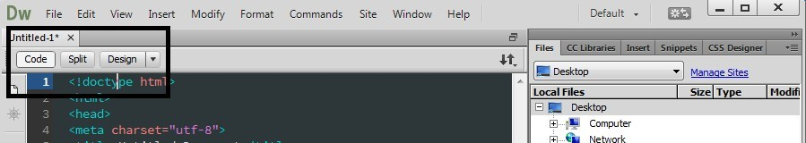Chế độ Design (thiết kế) cho phép xây dựng trang web một cách trực quan và quan sát được trang web hiển thị ra sao trên thực tế:
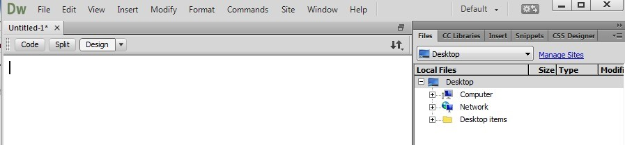Chế độ Code thường được các nhà thiết kế web và các lập trình viên có kinh nghiệm sử dụng để tiến hành viết mã HTML trực tiếp cho trang web. Mã nguồn được hiển thị với nhiều màu sắc khác nhau giúp việc đọc mã dễ dàng hơn:
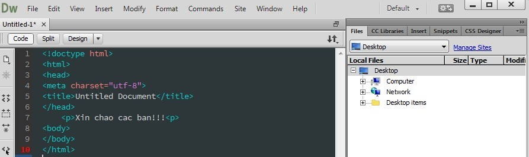Ở chế độ Split màn hình được chia làm hai phần để người dùng có thể sử dụng cả hai chế độ Design và Code:
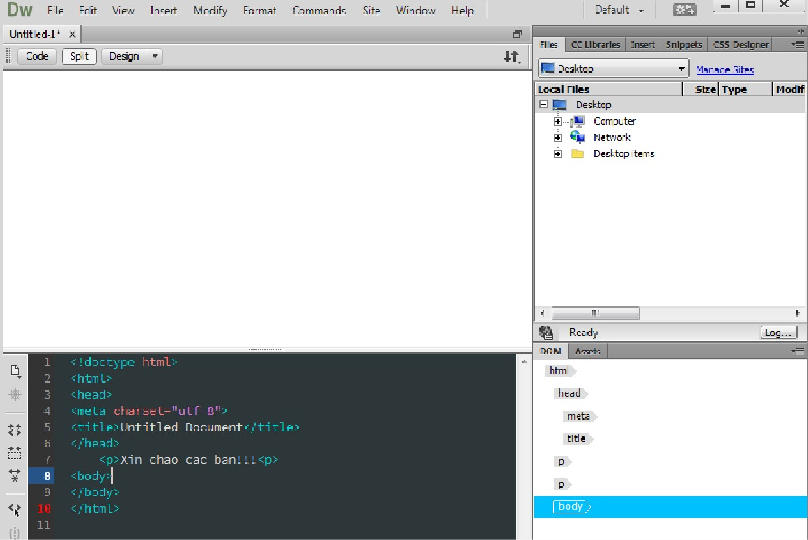Để quản lí website, chúng ta có thể vào mục Manage Sites bên phải màn hình trong giao diện khi chọn tab Files, như sau:
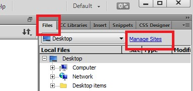Cửa sổ Manage Sites
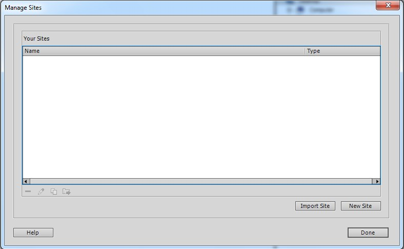Để tuỳ chọn bảng mã kí tự, chúng ta có thể vào mục Modify chọn Page Properties và chọn Title/Encoding. Trong mục Title/Encoding chọn bảng mã (UTF-8) trong mục Coding:
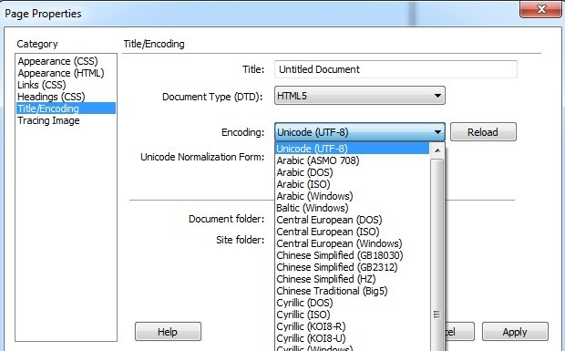Trong cửa sổ Page Properties, mục Title/Encoding chọn Document Type (DTD) để chọn chuẩn HTML, ví dụ chọn HTML5
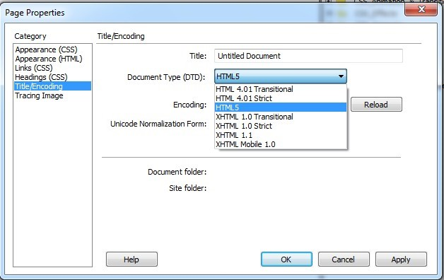Tương tự ta có thể thay đổi các thông số về CSS cho phù hợp trong mục Category của cửa sổ Page Properties.
Để tạo một trang HTML mới, chúng ta vào mục File/New sẽ xuất hiện cửa sổ New Document như sau:
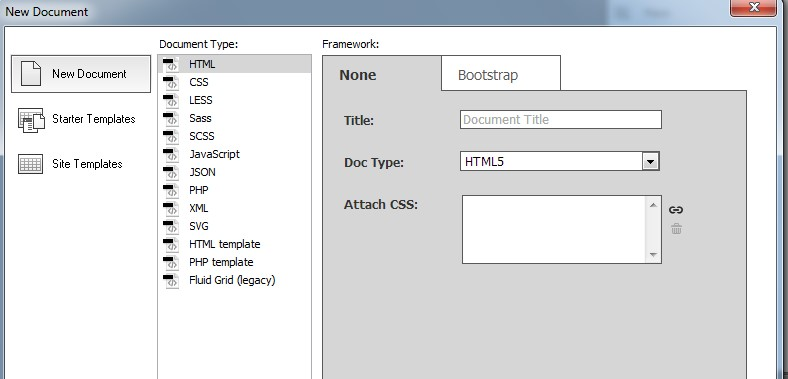Gõ tiêu đề trang trong mục Title, chọn phiên bản HTML (ví dụ HTML5) trong mục Doc Type và nếu có liên kết với tập tin CSS bên ngoài thì trong mục Attach CSS chọn biểu tượng bên phải, cụ thể như hình dưới:
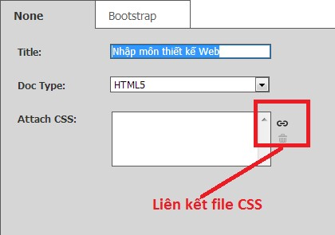Sau khi hoàn tất bấm vào nút Create. Sau khi tạo trang HTML mới, để điều chỉnh lại định dạng trang như tiêu đề, mã kí tự hay cách hiển thị,…, chúng ta vào mục Modify chọn Page Properties:
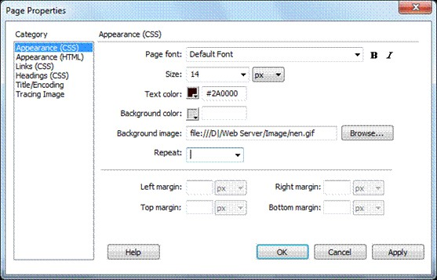Trong hộp thoại Page Properties bạn chỉnh các thông số sau:
Mục Appearance (HTML)
Mục Title/Encoding
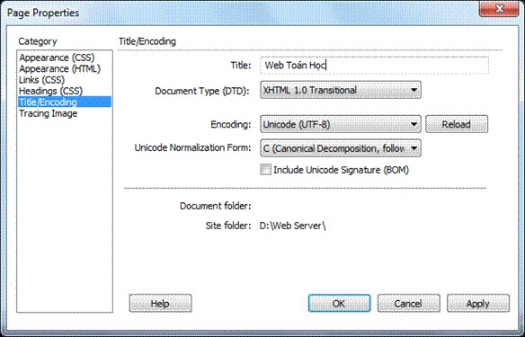Sau khi tinh chỉnh định dạng trang web xong, chọn OK để thiết lập.
Thiết kế trang web: theo hai cách là kéo-thả và dùng code.
Sử dụng chức năng kéo-thả, chèn trực tiếp các đối tượng HTML vào trang web từ các thanh công cụ hoặc thực đơn làm việc. Trong khung cửa sổ bên phải chọn tab Insert, bên dưới có mục HTML (mặc định) và dấu mũi tên, như sau:
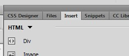Nhấp vào dấu mũi tên để lựa chọn đối tượng cần chèn vào trang web như HTML, Form, Templates,...
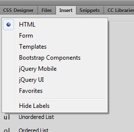Dùng code hay viết mã trực tiếp trong cửa sổ code:
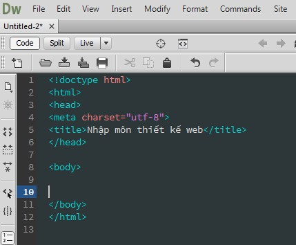Để liên kết CSS vào trang HTML, chúng ta vào mục CSS Designer bên góc phải màn hình và nhấp vào dấu "+" ở dưới để chọn kiểu CSS, như hình sau:
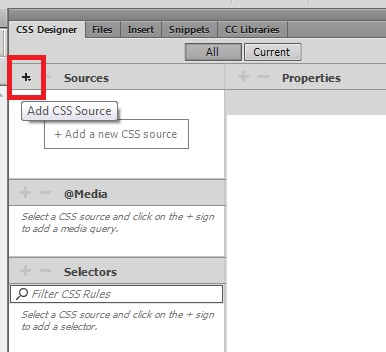Thêm internal CSS vào mục Define in Page:
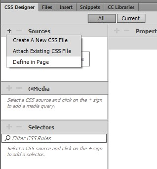Trong cửa sổ Code sẽ xuất hiện cặp thẻ như sau:
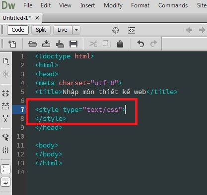Liên kết với file CSS đã tồn tại sẵn: vào Attach Existing CSS File
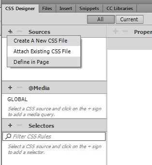Tạo file CSS mới: vào Attach Existing CSS File
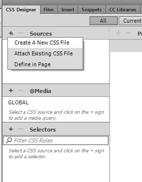Host trong tiếng Anh dịch ra có rất nhiều nghĩa, trong đó nghĩa dành cho nghành công nghệ thông tin là máy chủ. Host nghĩa là một máy tính có cấu hình rất mạnh, được đặt tại một vị trí chuyên biệt dành cho máy chủ (Datacenter), được kết nối đường truyền internet tốc độ cao để phân tán dữ liệu lên môi trường internet bằng cách cho phép người dùng tải dữ liệu hoặc gửi dữ liệu lên.
Website cần được đưa lên một host nào đó để người dùng có thể truy cập được. Thường có 3 loại host:
Nếu cá nhân hay tổ chức có đủ nguồn kinh phí, cơ sở hạ tầng (máy chủ, đường truyền Internet tốc độ cao,v.v.), nguồn nhân lực IT thì có thể tự tạo host cho riêng mình.
Host miễn phí nghĩa là một dịch vụ cho phép bạn đăng ký một gói host với chi phí bằng không, thường được những người mới tìm hiểu làm web hoặc chưa có kinh phí thuê host riêng tìm kiếm.
Ưu điểm duy nhất là bạn có một host riêng trên môi trường internet hoàn toàn miễn phí, không mất tiền thuê hàng tháng để làm website.
Nhược điểm của host miễn phí:
Có thể thuê host từ các nhà cung cấp trong hay ngoài nước. Mỗi lựa chọn này có ưu, nhược điểm riêng. Khi lựa chọn cần dựa vào đặc điểm của website, khả năng tài chính của cá nhân/doanh nghiệp, số lượng khách truy cập dự kiến, tốc độ đáp ứng yêu cầu, khách địa phương hay quốc tế.
Dùng File Manager là công cụ quản trị file thông qua môi trường web. Với công cụ này, bạn có thể thực hiện các thao tác: tải lên/ tải xuống các tệp tin, phần quyền file, thư mục...
FTP là một khái niệm rất quan trọng vì trong suốt thời gian bạn sử dụng host để làm website, có thể bạn sẽ cần sử dụng FTP nhiều hơn là dùng control panel của host vì nó sẽ giúp bạn tiện lợi hơn trong việc upload/quản lý các tập tin và thư mục trên host vì sử dụng tính năng File Manager có trong control panel đôi lúc hơi rườm rà và bất tiện, cũng như ở trên đó bạn sẽ không thấy các tập tin hệ thống có tên là .htaccess, nên chúng ta sẽ cần sử dụng FTP để quản lý dữ liệu trên ổ cứng của host.
FTP là gì? FTP là chữ viết tắt của File Transfer Protocol (Giao thức chuyển nhượng tập tin), đây là một giao thức giúp bạn dễ dàng trao đổi các dữ liệu giữa máy tính của bạn với host và ngược lại. Tại FTP, bạn sẽ có quyền quản lý toàn bộ các dữ liệu dạng tập tin và thư mục có trên host ngoại trừ database. Tất cả các gói host bạn mua có hỗ trợ control panel cPanel, DirectAdmin,…đều hỗ trợ sẵn FTP qua cổng kết nối 21.
Cách kết nối vào FTP Trước khi kết nối vào FTP trên host, mình cần các bạn đã chắc chắn trỏ tên miền về host mặc dù bước này không cần thiết vì bạn có thể kết nối vào cái hostname của host hoặc dịa chỉ IP của host nhưng ở đây mình sẽ chỉ hướng dẫn kết nối vào FTP qua tên miền trên host để tránh dài dòng.
Để kết nối vào FTP trên host bạn cần phải sử dụng một ứng dụng chuyên làm việc này, nó được gọi là FTP Client. Hiện nay, bạn có thể sử dụng phần mềm FileZilla vì đây là FTP Client miễn phí tốt nhất hiện tại, hỗ trợ hầu hết mọi hệ điều hành hiện nay.
Mỗi trang trên website của bạn đã được thiết lập tính năng mặc định là "Public" để mọi người có thể xem thấy trang của bạn khi bạn nhấn "PUBLISH".
Thay đổi thiết lập có nghĩa là bạn giới hạn quyền của những ai đã đăng ký làm thành viên trong trang web của bạn (hay chỉ một nhóm người nào do bạn chỉ định) mới có thể truy cập vào trang mà bạn đã thiết lập. Nếu bạn thiết lập một trang với tính năng Specific Members or Group thì chỉ có nhóm hay thành viên đã đăng ký vào trang của bạn mới có thể xem trang.
Khi chọn tính năng này, thì bạn nhấn vào Select Groups để thêm nhóm hay Select Members để thêm thành viên có thể truy cập trang của bạn. Nếu bạn đã có một nhóm hay một vài thành viên thì điều này chỉ thực sự hữu ích. Mỗi khi bạn đã sử dụng tính năng này và nhấn PUBLISH để xuất bản trang web thì chỉ những thành viên hay nhóm mới có thể vào xem trang của bạn.
Với tính năng này, bạn hoàn toàn có thể thiết lập một forum hay một trang mà chỉ những ai đăng ký vào website của bạn mới có thể truy cập vào. Đây thực sự là một công cụ hữu ích để mở rộng nhóm và mạng lưới của bạn.
Bạn hãy đăng nhập vào website của nhà cung cấp hosting và cần thay đổi cấu hình để có thể truy cập tên miền hay IP của website.
Tuỳ theo cá nhân hay tổ chức, nội dung website mà có những hình thức quảng bá website đến đối tượng của nó một cách hiệu quả nhất. Tuy nhiên, khi công khai website ra cộng đồng, đối tượng đầu tiên chúng ta nhắm đến là các cỗ máy tìm kiếm (Search Engine) như Google hay Bing. Kĩ thuật tối ưu hoá máy tìm kiếm (gọi tắt là SEO) là một kĩ thuật phổ biến mà bất kì người thiết kế web hay quản trị web đều phải quan tâm.